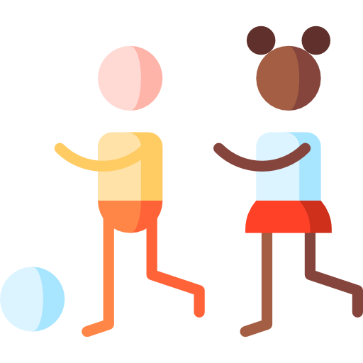

O QUE CADA UM PODE FAZER ALGO PARA A MUDANÇA?

o que você empregador pode fazer
1.TENHA CONFIANÇA EM SUA FUNCIONÁRIA;é comum ouvirmos relatos aonde simplismente por ser mulher ganha-se menos autonomia que um homem em alcançar a aprovação em projetos por exemplo;
2.RESPEITE CARACTERÍSTICAS PRÓPRIAS:É mais difícil para uma mulher sair da empresa altas horas depois do expediente, do que para um homem, visto que sua segurança física pode ser comprometida,tento em vista a incidência de ataques a mulheres no periodo noturno;
3. DE TOTAL APOIO MATERNIDADE;
VEJA MAIS EM: dicas para diminuir a desigualdade na sua empresa;
INSTITUIÇÕES GOVERNAMENTAIS
1.UM OLHAR MAIS ANTENSIOSO A CASOS DE ESTRUPO E ABUSO, SENDO CRIADAS MAIS LEIS REALMENTE EFICAZES
2.PROJETOS PARA MAIOR INCLUSÃO DE MULHERES EM MEIOS GOVERNAMENTAIS
OS ENSINAMENTOS GANHADOS NA INFÂNCIA CONSTROEM O PENSAMENTO DE UM ADULTO
1.dia a dia reproduzimos um ambiente machista aonde os meninos não podem fazer os serviços domésticos e as meninas não podem jogar futebol, devemos quebrar esse paradigma para que assim as crianças vivam em um ambiente de liberdade e igualdade
2.as crianças devem estar sempre cientes;
3.não devem ser descriminilizadas por ser menina ou menino;
4.ninguém tem o direto de tocar no seu corpo;
5.não existe brinquedo de menina ou de menino;